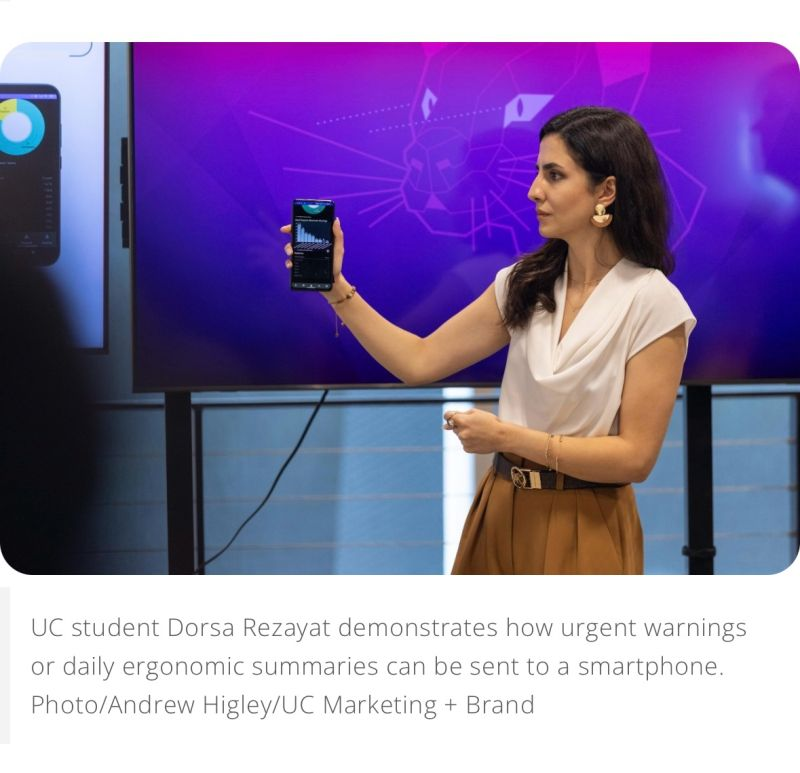

Phase 2 – Human Digital Twin & Physics-Informed Ergonomic Modeling
Leading a five-member research team in Phase 2 of a $2M Ohio BWC–funded project advancing a PINN-based human digital twin for ergonomic risk assessment in manufacturing.
Portfolio
Graduate Research Assistant, Mechanical Engineering — University of Cincinnati
I build simulation-driven Human Digital Twin systems that combine biomechanics, ergonomic risk metrics, and physics-informed AI to support safer, more reliable work in manufacturing environments.
My work focuses on turning raw motion data into deployable safety intelligence: I design kinematic processing pipelines (local anatomical frames, smoothing, joint-angle dynamics), translate them into ergonomic risk metrics and interpretable violation codes, and train physics-informed learning models that respect biomechanical constraints. The goal is not only accurate prediction, but also actionable, real-time feedback (e.g., smartwatch alerts) and end-of-shift risk summaries that improve worker safety without sacrificing task productivity.
Phase 2 (Ohio BWC) — Real-time ergonomic safety analysis for workers, advancing deployable physics-informed models with support from the Ohio Bureau of Workers’ Compensation.
Advancing real-time human ergonomic analysis to improve worker safety by addressing both instantaneous injury risks and long-term (chronic) musculoskeletal strain.
Biomechanics • Human Digital Twin Modeling & Analysis • Physics-Informed Machine Learning • Real-Time Human Safety & Injury Risk Assessment.
Cincinnati, OH • Available for research collaboration & industry projects
I develop human-centered, physics-consistent AI systems for manufacturing safety. My work integrates biomechanical reasoning (joint kinematics, posture dynamics, ergonomic thresholds) with machine learning to generate actionable feedback, including real-time injury-risk warnings and predictive ergonomic assessments within a Human Digital Twin framework.
University of Cincinnati
Human Digital Twins • Physics-Informed Learning • Ergonomic Risk Prediction
University of Cincinnati
Thesis: Physics-Informed Deep Learning for Personalized Ergonomic Risk Prediction
Tehran, Iran
Biomechanics • Human-centered engineering foundations
Funded by the Ohio Bureau of Workers’ Compensation (BWC)
I lead ergonomic modeling and physics-informed learning within a human digital twin framework aimed at workplace injury prevention. I design end-to-end pipelines that transform motion into interpretable risk metrics, develop models that respect biomechanical constraints, and support scalable, explainable safety feedback suitable for deployment on the factory floor.
Leading a five-member research team in Phase 2 of a $2M Ohio BWC–funded project advancing a PINN-based human digital twin for ergonomic risk assessment in manufacturing.
Building physics-based learning objectives that enforce ergonomic safety limits while preserving efficient task execution—so safety improvements don’t come at the cost of throughput or usability.
Served as the project’s ergonomics and digital twin expert, designing and validating risk metrics and pipelines for camera- and smartwatch-based ergonomic feedback on the factory floor.
UC News featured our work on developing a real-time AI-driven system that warns workers about injury risks, supporting safer manufacturing environments through human digital twins and ergonomic risk modeling.
Featured by Spectrum News 1: UC’s Ohio BWC–funded research uses human “digital twins” and generative AI to model motion, detect risky postures, and deliver actionable feedback to reduce workplace injuries. Read the story
Verified digital credential recognizing participation and demonstrated engagement with Siemens Designcenter NX Student Day (2025). This aligns with my work at the intersection of simulation workflows and human-centered engineering in manufacturing contexts.
View verified badge (Credly)
LinkedIn: dorsa-rezayat
Google Scholar: Profile